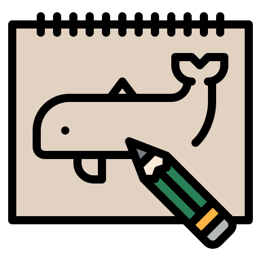
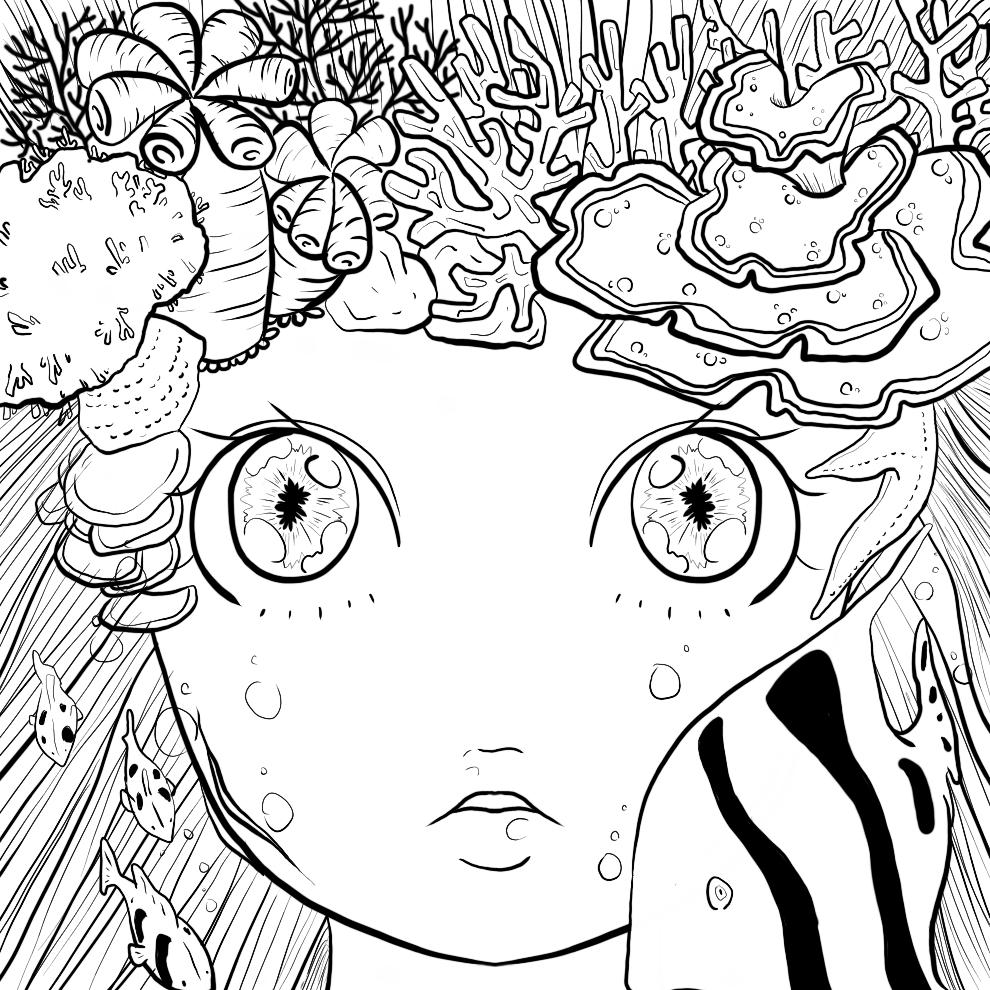
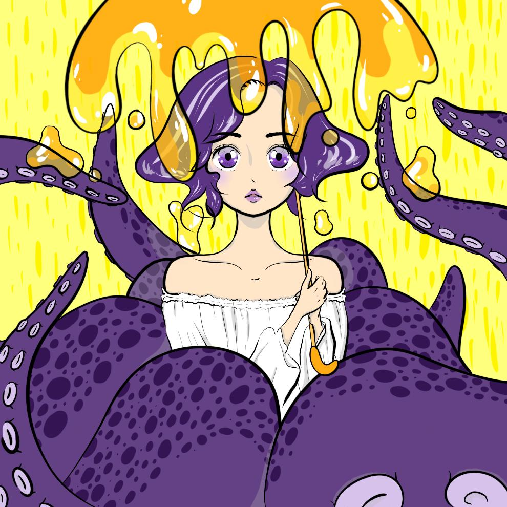
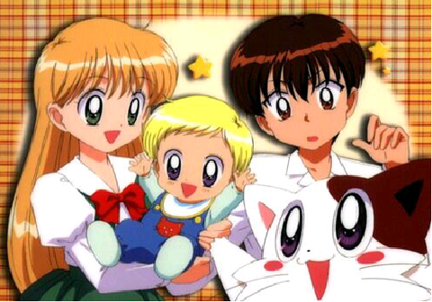

자기소개
이름: 안소현
나이: 1998/07/17
"초~고등학교"
성격이 소심한 편으로 항상 눈에 띄지 않게 행동하려는 경향이 강했습니다. 예를 들면 행인 1 처럼 반 안에서 친구들 사이에 잘 녹아드려고 노력했고, 성인이 될 때까지 평범한게 친구를 사귀고 취미생활을 하거나 공부하며 즐겁게 학교 생활을 했다고 생각합니다.
"취미"
초등학교때부터 그림그리는 것을 좋아했습니다. 남의 그림을 보는 것도 좋아했고, 그림을 그려서 친구들에게 보여주는 것도 좋아했습니다. 현재도 시간이 많이 남거나, 좋은생각이 떠오르면 종종 그림을 그리면서 스트레스를 풀고는 합니다.
 (위의 그림은 가장 최근에 그림 그림들 입니다.)

"진로"
저의 진로 결정에 가장 많은 영향을 끼친 것을 '애니메이션'입니다. 그림을 좋아하게 된 계기도 여기서 부터 시작하고 그림그리는 것과 더불어 지금까지 꾸준히 가지고있는 취미입니다. 처음 만화를 접했을때는 단순히 '재미있다'라는 감정에서 그쳤지만 어느 순간부터 만화를 직접 만들고 싶다는 생각을 가지게 되었습니다. 하지만 그러한 생각을 가지게 된 시점이 고등학교 2학년 말쯤 이었기 때문에, 늦었다고 생각하여 대학에 가기위해서,현재 가장 잘할 수 있고, 열중할 수 있는게 무엇일까를 고민하던 중 애니메이션에서 지겹게 들었던 일본어 공부를 생각했습니다. 언어에 완전히 관심이 없던것이 아니었기 때문에 진학결정을 쉽게 하였고, 현재 전공에도 만족하고 있습니다. 이후 대학 커리큘럼이 복수전공 필수로 바뀐 후 이것을 기회로 생각하고 저의 꿈과 맞아보이는 디지털인문예술전공을 선택하게 되었습니다.